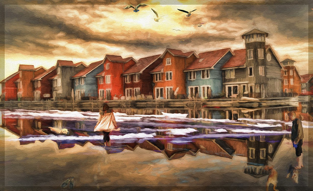

⛏Let's build our home base here away from the spawn area.
スポーンエリアから離れたここにホームベースを作りましょう。
[lɛts ˈbɪld ˈaʊər ˈhoʊm ˈbeɪs hɪr əˈweɪ frəm ðə ˈspɔn ˈɛriə]
- our home: 語末 r が次の母音に連結
- from は弱形 /frəm/
レッツ ビルド アウア ホーム ベイス ヒア アウェイ フラム ザ スポーン エリア

⛏Let's build our home base here away from the spawn area.
スポーンエリアから離れたここにホームベースを作りましょう。
⛏I decorated my home with bookshelves and a crafting table.
本棚とクラフトテーブルでホームを装飾しました。
⛏The creeper destroyed my home, but I can rebuild it.
クリーパーが私のホームを破壊しましたが、再構築できます。
We build our homes and stay safe.
我々は家を建て、安全に留まる。
These homes are protected by walls.
これらの家は壁によって保護されている。
The pigeon homes to the coop every day.
その鳩は毎日小屋に帰る。
The player homes in on the village entrance.
プレイヤーは村の入口を狙う。
Last night, we homed in on the stronghold.
昨夜、我々は要塞を見つけた。
The zombie homed toward our base.
ゾンビは我々の基地に向かってきた。
Once we've homed in on the location, we'll dig.
一旦、場所を定めたら、掘り始めるつもりだ。
The players have homed in on the End Portal.
プレイヤーたちはエンドポータルを見つけた。
We're homing in on the treasure.
我々は宝を狙っている。
Stop homing toward the player base!
プレイヤーの基地に向かってくるな！
⛏I finished my wooden house—home sweet home!
木造の家を完成させた。素敵なホームだ！
⛏We brought it home by defeating the Ender Dragon.
エンダードラゴンを倒して目標を達成しました。